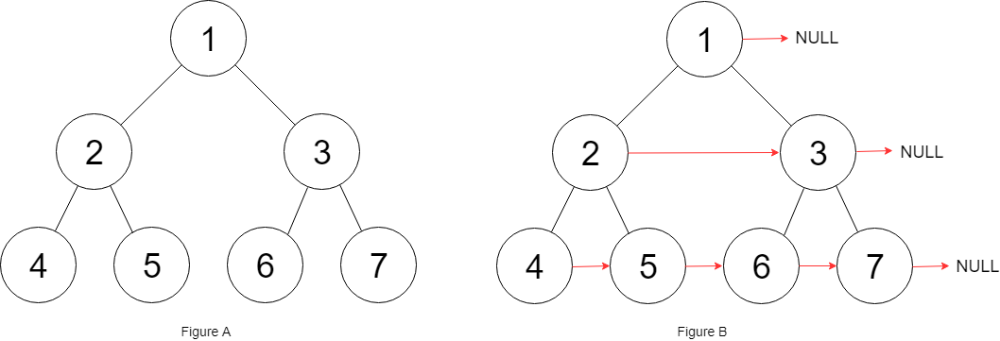

116. 填充每个节点的下一个右侧节点指针
完美二叉树 O(1) 空间：用上一层的 next 链横扫当前层，左孩子连右孩子、右孩子连下家的左孩子。
思路
leftmost指向每层最左结点；处理第 k 层时，第 k 层的next链已经就绪，可用来横扫。- 横扫每个
cur：同父亲的cur.left.next = cur.right；跨父亲的cur.right.next = cur.next.left（靠cur.next找到下家）。 - 一层扫完
leftmost = leftmost.left下移，直到某层没有孩子（完美二叉树保证有则全有）。 - 只用已有指针，不需要队列，额外空间 O(1)。
图解
最优解
1/*2// Definition for a Node.3class Node {4 public int val;5 public Node left;6 public Node right;7 public Node next;8 9 public Node() {}10 11 public Node(int _val) {12 val = _val;13 }14 15 public Node(int _val, Node _left, Node _right, Node _next) {16 val = _val;17 left = _left;18 right = _right;19 next = _next;20 }21};22*/23 24class Solution {25 public Node connect(Node root) {26 if (root == null) return null;27 // leftmost：每层最左结点。处理第 k 层时，第 k 层的 next 已经串好28 Node leftmost = root;29 while (leftmost.left != null) { // 完美二叉树：本层有孩子说明还有下一层30 for (Node cur = leftmost; cur != null; cur = cur.next) {31 cur.left.next = cur.right; // 同一个父亲：左孩子连右孩子32 if (cur.next != null) cur.right.next = cur.next.left; // 跨父亲：右孩子连下家的左孩子33 }34 leftmost = leftmost.left; // 下一层最左就是本层最左的左孩子35 }36 return root;37 }38}题目
给定一个 完美二叉树 ，其所有叶子节点都在同一层，每个父节点都有两个子节点。二叉树定义如下：
struct Node {
int val;
Node *left;
Node *right;
Node *next;
}
填充它的每个 next 指针，让这个指针指向其下一个右侧节点。如果找不到下一个右侧节点，则将 next 指针设置为 NULL。
初始状态下，所有 next 指针都被设置为 NULL。
示例 1：

输入：root = [1,2,3,4,5,6,7] 输出：[1,#,2,3,#,4,5,6,7,#] 解释：给定二叉树如图 A 所示，你的函数应该填充它的每个 next 指针，以指向其下一个右侧节点，如图 B 所示。序列化的输出按层序遍历排列，同一层节点由 next 指针连接，'#' 标志着每一层的结束。
示例 2:
输入：root = [] 输出：[]
提示：
- 树中节点的数量在
[0, 212 - 1]范围内 -1000 <= node.val <= 1000
进阶：
- 你只能使用常量级额外空间。
- 使用递归解题也符合要求，本题中递归程序占用的栈空间不算做额外的空间复杂度。
题面取自力扣当前版本。
数据快照 2026-11-04。题面版权归力扣所有，本站点仅供本人学习使用，请勿对外发布。